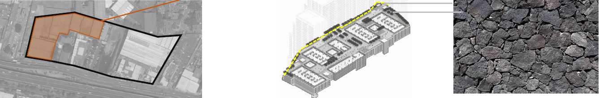
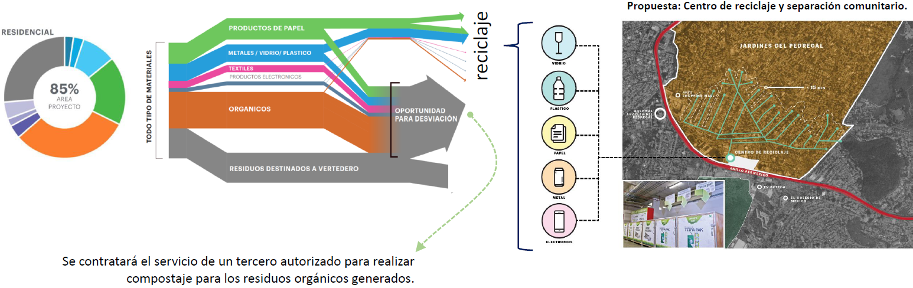
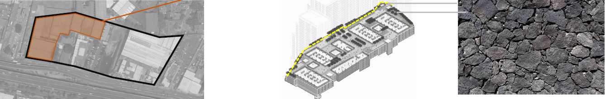
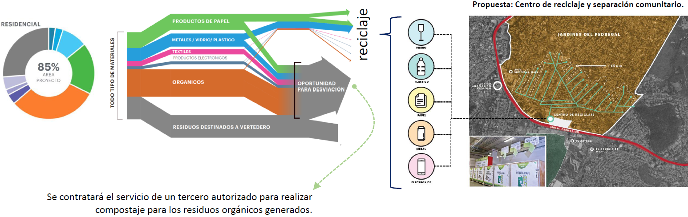

Suelo
Aliquam ut ex ut interdum donec amet imperdiet eleifend
Estabilidad de Taludes
- Programa de vulnerabilidad de riesgos y se llevará a cabo el programa de protección a colindancias en conjunto
con Impacto Urbano
- Llevar a cabo un peritaje sobre la estabilidad de taludes respecto a las colindancias
Contaminación
del suelo
- El predio no se encuentra en zona industrial, sin embargo, se emplean residuos peligrosos en la Agencia
- Se presentará el estudio para descartar la existencia de pasivos ambientales, en su caso un estudio fase III
para la restauración de suelos contaminados
Residuos
peligrosos
- El proyecto, durante las etapas de construcción y operación llevará a cabo cumplimiento de la normatividad
federal en la materia
- La PTAR cumplirá con los límites máximos permisibles de contaminantes en los lodos y biosólidos de la PTAR
- El proyecto implementará un programa de manejo de los lodos y biosólidos procedentes de la PTAR
Residuos
de manejo
especial
- El proyecto contará con una Plan de Manejo de Residuos de la construcción, autorizado por la SEDEMA, conforme
a la Norma NADF 007 RNAT 2013 en el que se indique
- Durante la etapa de construcción llevará a cabo la sustitución de por lo menos un 20 de los materiales vírgenes
( guarniciones, banquetas, rellenos, terraplenes y bases hidráulicas)
- El proyecto considera la utilización de la piedra volcánica en su aplicación para la barda perimetral
- El proyecto considera el reúso de la arcilla de las canchas de tenis

Manejo
de residuos sólidos
urbanos
- El proyecto durante la etapa de construcción y operación contará con un área para el almacenamiento
temporal de los residuos sólidos urbanos, y separación de residuos de acuerdo con lo que establece la
normatividad ambiental aplicable
- Se integrará el programa de autogestión de los residuos generados
- Se contratará el servicio de un tercero autorizado para realizar compostaje para los residuos orgánicos
generados
- El proyecto llevará a cabo el manejo de residuos de acuerdo a la Norma ambiental para Distrito Federal NADF
024 AMBT 2013

- El predio no se encuentra en zona industrial, sin embargo, se emplean residuos peligrosos en la Agencia
- Se presentará el estudio para descartar la existencia de pasivos ambientales, en su caso un estudio fase III para la restauración de suelos contaminados
Residuos peligrosos
- El proyecto, durante las etapas de construcción y operación llevará a cabo cumplimiento de la normatividad federal en la materia
- La PTAR cumplirá con los límites máximos permisibles de contaminantes en los lodos y biosólidos de la PTAR
- El proyecto implementará un programa de manejo de los lodos y biosólidos procedentes de la PTAR
Residuos de manejo especial
- El proyecto contará con una Plan de Manejo de Residuos de la construcción, autorizado por la SEDEMA, conforme a la Norma NADF 007 RNAT 2013 en el que se indique
- Durante la etapa de construcción llevará a cabo la sustitución de por lo menos un 20 de los materiales vírgenes ( guarniciones, banquetas, rellenos, terraplenes y bases hidráulicas)
- El proyecto considera la utilización de la piedra volcánica en su aplicación para la barda perimetral
- El proyecto considera el reúso de la arcilla de las canchas de tenis

Manejo de residuos sólidos urbanos
- El proyecto durante la etapa de construcción y operación contará con un área para el almacenamiento temporal de los residuos sólidos urbanos, y separación de residuos de acuerdo con lo que establece la normatividad ambiental aplicable
- Se integrará el programa de autogestión de los residuos generados
- Se contratará el servicio de un tercero autorizado para realizar compostaje para los residuos orgánicos generados
- El proyecto llevará a cabo el manejo de residuos de acuerdo a la Norma ambiental para Distrito Federal NADF 024 AMBT 2013
